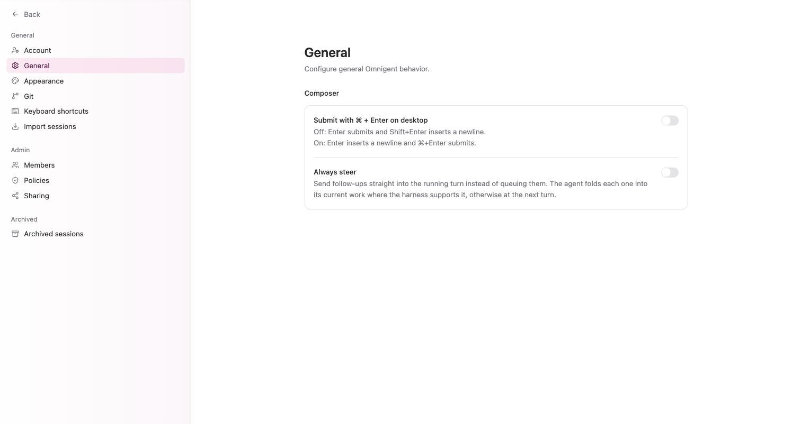
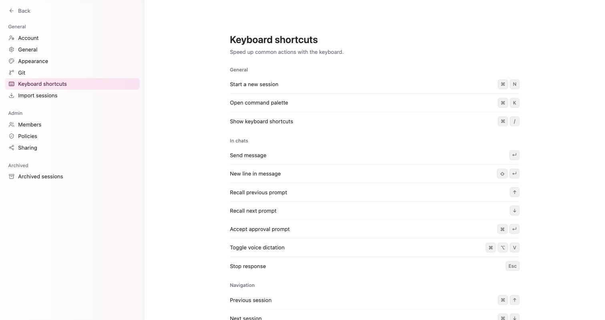

Composer 完全指南：斜線指令、@ 提及、模型挑選與中斷
為何需要本章
第 4 章你已經在輸入框打了一句話、按下送出、拿到回覆。那個輸入框叫 Composer，它看起來只是一個文字方塊，實際上是整個 Omnigent 裡你按最多次的地方。
多數人用它的方式是：打字、按 Enter、等。這樣能用，但你會錯過三件事——把檔案一起帶進去、用鍵盤直接叫出既有的指令、以及在代理跑歪的當下把它停住。這一章把 Composer 上每一個看得見的控制項拆開講。
本章的畫面描述來自 2026-09-09 對正式站的實機記錄。凡是那次記錄沒有涵蓋的細節，本章會直接寫「本書未查證」，不會替你猜一個畫面出來。
核心觀念：你送出的不只是那段文字
按下送出的那一刻，被打包送走的有五樣東西：你寫的任務描述、要在哪台機器上跑、在那台機器的哪個資料夾裡動手、由哪個代理執行、用哪個模型設定。前四樣全部在 Composer 上，而且全部在你打字之前就要決定。
這也是 Composer 跟一般聊天輸入框最大的差別。聊天輸入框只有一個變數，就是文字；Composer 有五個，其中四個是靜靜待在角落的下拉選單，很容易被忽略。
Composer（撰寫區）：畫面下方的任務輸入區。空白時的佔位文字是 Describe a task to start a new session…，直譯就是「描述一個任務來開始新的 session」。這句話說明了它的設計意圖：它要的是一個任務，不是一句閒聊。

Composer 上的每一個零件
以 2026-09-09 的實機記錄為準，Composer 由上下兩層構成。上層是輸入欄與四個按鈕，下層是三個選擇器。
| 控制項 | 位置 | 它決定什麼 |
|---|---|---|
| 任務描述欄 | 上層主體 | 代理要做的事。空白時顯示 Describe a task to start a new session… |
| Attach files | 上層按鈕 | 把檔案一起帶進這則訊息 |
| Voice dictation | 上層按鈕 | 用講的代替打字 |
| 兩個下拉選單 | 上層按鈕列 | 模型與相關設定（見下方說明） |
| Start session | 上層最右 | 建立 session 並開始執行 |
| Host | 下層第一個 | 代理跑在哪台機器。名稱前面有一個綠點代表線上 |
| 工作目錄 | 下層第二個 | 代理在那台機器上的哪個資料夾動手，例如 home |
| Worktree | 下層第三個 | 是否在 git 工作樹（worktree）裡另開一份來改 |
關於那兩個下拉選單：實機記錄把它們標記為「模型與設定」，但沒有把它們展開逐項拍下來，所以本書不列出它們的完整選項。可以確定的參照點是，同一套設定在 Automations 的新建對話框裡是三個具名欄位——Model、Effort 與 Permission mode，三者的預設值都是 Default，官方提示是「留在 Default 就會沿用該代理自己設定好的模型、力度與權限模式」。第 10 章會完整處理那個對話框。
下層那三個選擇器不是本章的主題，它們是第 6 章的整章內容。這裡你只要記得一件事：它們在你打字之前就已經生效，改它們不會改到你已經送出的訊息。
鍵盤：送出、換行、回溯與喊停
Composer 幾乎所有動作都有鍵盤對應。以下整份取自設定裡的 Keyboard shortcuts 頁。
| 動作 | 快捷鍵 | 分類 |
|---|---|---|
| 開新 session | ⌘N | General |
| 叫出命令面板 | ⌘K | General |
| 顯示快捷鍵表 | ⌘/ | General |
| 送出 | ↵ | In chats |
| 換行 | ⇧↵ | In chats |
| 回溯上一則提示 | ↑ | In chats |
| 下一則提示 | ↓ | In chats |
| 接受核准提示 | ⌘↵ | In chats |
| 語音輸入 | ⌘⌥V | In chats |
| 停止回應 | Esc | In chats |
上表的第 4、5 列會被一個設定整組對調。設定路徑是 Settings → General → Submit with ⌘ + Enter on desktop：
- 關閉（預設）：
Enter送出，Shift+Enter換行 - 開啟：
Enter換行，⌘+Enter送出
寫多行任務描述的人建議開啟，寫短句的人建議關閉。這是全域設定，不是逐個 session 設定。
另一個值得先知道的設定在同一頁：Always steer。開啟後，你在代理還在跑的時候送出的訊息會直接送進那個進行中的回合，而不是排隊等它做完。代理所用的框架支援時，它會把新指示折進當前工作；不支援時則留到下一回合處理。任務跑歪的時候，這個設定決定你「補一句話」會多快生效。
斜線指令，以及 @ 提及的實情
在任務描述欄輸入斜線會跳出建議選單。實機記錄下來的是這個選單的三個操作鍵：
↑↓：在建議項目之間移動Tab：套用目前選中的項目Esc：關閉建議選單
本書未查證：斜線指令的完整目錄。2026-09-09 的記錄只涵蓋選單的操作方式，沒有列出可用指令清單。合理的預期是這份清單會隨你選的代理而不同（Claude Code 與 Codex 各自帶自己的指令集），但這是推論，不是本書查證過的畫面。要看你這台實際有哪些，直接在輸入欄打一個斜線就會列出來。
關於 @ 提及：本章標題列了它，但 2026-09-09 的實機記錄沒有涵蓋 @ 觸發的行為，所以本書不描述它的選單長相或可提及的對象範圍。可以確定的相關事實只有一條——Inbox 的空狀態文案寫著「當代理需要你的輸入，或有人在某個檔案上留言，就會出現在這裡」，這說明檔案層級的協作在產品裡是存在的。那條路徑走的是 Inbox，屬於第 9 章。
開始之前
要把這一章走完，你需要三樣東西：
- 能登入的帳號，並且看得到左側欄的
New session - 至少一台 Host，名稱前面顯示綠點。沒有綠點的話先跳到第 6 章與第 16 章
- 知道你想動哪個資料夾。第一次練習建議挑一個沒有重要資料的目錄
代理是真的會在那台機器上動檔案的。練習用的第一個任務請挑「只讀不寫」的內容，例如「列出這個目錄下最大的五個檔案」，不要一開始就叫它整理或刪除。
送出一個任務的完整順序
-
先確定送出鍵的行為
到
Settings→General看 Submit with ⌘ + Enter on desktop 是開還是關。這一步只做一次，但沒做過的人會在寫第一段多行任務時就把半句話送出去。 -
選 Host，確認它有綠點
回到 Composer，點下層第一個選擇器，挑一台名稱前面有綠點的機器（實機記錄裡的例子是
Pi Web ChatGPT (pi5)）。沒有綠點的機器不要選，那是第 18 章的題目。 -
選工作目錄與 Worktree
第二個選擇器決定代理在哪個資料夾動手，實機記錄的例子是
home。第三個選擇器決定要不要另開一份 git 工作樹來改。改既有專案的程式碼時，另開 worktree 比較安全；只是讀檔案或整理資料則不需要。 -
把任務寫成一句可驗收的話
寫的時候問自己：做完之後我要看什麼才知道它做對了。「檢查一下設定檔」不可驗收，「把這個目錄下所有 .yaml 檔的縮排錯誤列出來，只列不改」可驗收。要寫多行就照第一步的設定換行。
-
需要的檔案用 Attach files 帶進去
如果任務需要參照你手上的檔案（規格、記錄檔、截圖），用
Attach files附上去，不要把內容整段貼進輸入欄。附件與貼上的差別在於前者代理可以逐段讀取。本書未查證檔案大小與型別的上限，附件被拒絕時以畫面上的訊息為準。 -
按 Start session，然後盯著它做什麼
送出後不要立刻切走。第一個回合最容易看出方向對不對：它讀了哪些檔、要不要跑指令、有沒有跳出核准提示。跳出核准提示時，
⌘↵是接受；覺得不對就按Esc停止回應，然後改寫任務描述重來。

怎麼確認你把 Composer 用熟了
下面五件事你應該都能不查資料直接做到。做不到的往回翻該節。
- 不用滑鼠，只用鍵盤開出一個新 session（提示：
⌘N） - 說得出你這台的
Enter是送出還是換行，以及在哪裡改 - 在輸入欄打一個斜線，用
↑↓選一項、Tab套用、再用Esc關掉 - 送出一個任務後，在它跑到一半時用
Esc把它停下來 - 指著 Composer 下層三個選擇器，說出每一個決定的是什麼
故障排除
- 按 Enter 只換行，訊息送不出去：
Settings→General的 Submit with ⌘ + Enter on desktop 是開啟狀態，這時送出鍵是⌘+Enter。要改回 Enter 送出就把它關掉。 - 打了斜線但選單沒反應，或選錯項目：建議選單開著時
↑↓是移動、Tab才是套用（不是Enter）。要放棄就Esc關掉選單，這時Esc關的是選單，不是停止回應。 - Host 沒有綠點，或選擇器裡根本沒有機器：這不是 Composer 的問題。Composer 只負責顯示，機器要先註冊並保持連線才會出現。處理方式在第 16 章（註冊主機）與第 18 章（連線排錯）。
- 代理跑歪了，按 Esc 之後不知道怎麼接：
Esc是停止回應，不是撤銷已經做過的事。停下來之後先看 Workspace 面板確認它改了什麼（第 7 章），再決定是補一句修正還是整個 session 重開。 - 補送的訊息好像沒被理會：看
Settings→General的 Always steer。關閉時你的新訊息會排隊等當前回合結束；開啟時會直接送進進行中的回合，但代理所用的框架不支援折進當前工作時，仍然會留到下一回合。 ↑叫不回上一則提示：這個鍵在斜線建議選單開著時是移動選項。先確認選單已關閉再試。本書未查證輸入欄已有多行文字時↑的行為，遇到叫不回來時把輸入欄清空再按一次。
固定來源
本章的產品邊界與版本說法，以下列來源的該 commit 內容為準，不以主分支的當下狀態為準。
Composer 的控制項名稱、佔位文字、快捷鍵表與 General 頁的兩個設定，來自 2026-09-09 對正式站的實機記錄，整理在本倉庫的 docs/research/ui-facts-2026-09-09.md。本章所有標示「本書未查證」的段落，指的就是那份記錄沒有涵蓋的部分。
常見問題
這一章講的操作在三種部署方式上都一樣嗎？
Composer 是網頁介面的一部分，三種部署方式（Home Assistant 附加元件、Rootless Podman、k3s Helm）跑的是同一套前端，控制項與快捷鍵不會因為部署方式而不同。會不同的是 Host 選擇器裡列出哪些機器，那取決於你接了什麼上去。版本落差以本章「固定來源」指向的 commit 為準。
為什麼書上不直接列出斜線指令有哪些？
因為 2026-09-09 的實機記錄沒有拍到那份清單，本書的規矩是沒查證過的畫面不寫。而且這份清單很可能隨你選的代理而變動，即使列出來也只對某一種代理成立。要看你這台實際有什麼，在輸入欄打一個斜線就會跳出來，那份才是準的。
我按了 Esc，代理已經改掉的檔案會還原嗎？
不會。Esc 對應的是「停止回應」，它讓代理停止繼續動作，不會把已經寫下去的變更倒回來。這也是為什麼建議改既有專案時在 Composer 下層第三個選擇器另開一份 git 工作樹——改壞了丟掉那份就好。已經動到的檔案要怎麼看，在第 7 章。
模型下拉選單裡挑錯會怎樣，可以中途換嗎？
本書未查證這兩個下拉選單展開後的完整選項，也未查證 session 開始後能不能改。可以確定的是不同模型的花費差很多，而且 Usage 頁面會把成本按模型拆開列給你看，所以挑錯的代價是看得見的。判讀那一頁在第 13 章。實務上比較安全的做法是先用預設值跑通，等你知道這類任務要花多少之後再調。
畫面上的按鈕跟書上寫的名字對不上，是版本差異還是我看錯？
先比對本章「固定來源」指向的 commit。本書記的是 2026-09-09 那天正式站上的英文原標籤，例如 Attach files、Start session；如果你的畫面顯示的是別的語言或別的措辭，多半是版本較新或介面語言不同，不是你操作錯誤。功能位置（上層按鈕列、下層三個選擇器）比標籤文字穩定，先照位置找。